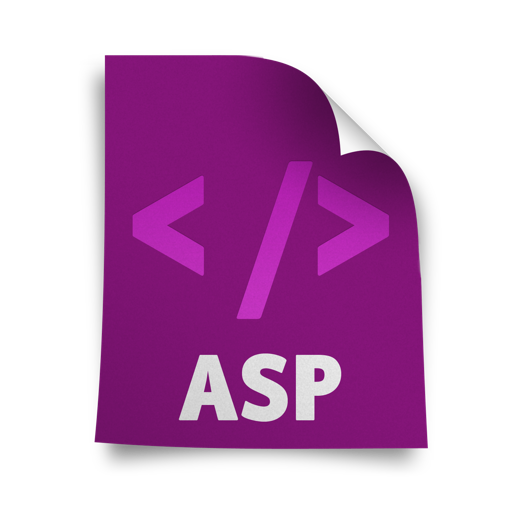
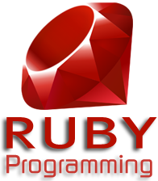

Sus orígenes se remontan a 1969, cuando se estableció la primera conexión de computadoras, conocida como Arpanet, entre tres universidades en
California y una en Utah, Estados Unidos.
Un servidor web o servidor HTTP es un programa que procesa cualquier aplicación del lado del servidor realizando conexiones bidireccionales y/o unidireccionales y síncronas o asíncronas con el cliente generando o cediendo una respuesta en cualquier lenguaje o Aplicación del lado del cliente.
La mayoría de servidores añaden algún nivel de seguridad a sus tareas. Por ejemplo, si usted ha ido a alguna página y el navegador presenta una ventana de diálogo que pregunta su nombre de usuario y contraseña, ha encontrado una página protegida por contraseñas.
1. Aplicaciones Web CGI : El estado se almacena en el cliente y cada petición supone una ejecución completa independiente de estado (Transacction Script)
2. JSP y Servlets : JSPs llevan la lógica de presentación(navegabilidad, visualización, etc.)
3. Modelo MVC : Incorporación del patrón de diseño MVC.
1. Lenguaje HTML: Es un lenguaje estático para el desarrollo de sitios web, en español Lenguaje de Marcas Hipertextuales.
Desarrollado por el World Wide Web Consortium (W3C).
Los archivos pueden tener las extensiones (htm, html).
2. Lenguaje Javascript : Este es un lenguaje interpretado, no requiere compilación.
Utilizado principalmente en páginas web.
3. Lenguaje PHP : PHP es un acrónimo recursivo que significa “PHP Hypertext Pre-processor”.
PHP es un lenguaje de script interpretado en el lado del servidor utilizado para la generación de páginas web dinámicas, embebidas en páginas HTML y ejecutadas en el servidor.

4. Lenguaje ASP : Es una tecnología del lado de servidor desarrollada por Microsoft para el desarrollo de sitio web dinámicos.
ASP significa en inglés (Active Server Pages).
5. Lenguaje ASP.NET : ASP.NET es el sucesor de la tecnología ASP, fue lanzada al mercado mediante una estrategia de mercado denominada .NET.
6. Lenguaje JSP : Es un lenguaje para la creación de sitios web dinámicos, acrónimo de Java Server Pages.
Está orientado a desarrollar páginas web en Java.
7. Lenguaje Python : Los usuarios lo consideran como un lenguaje más limpio para programar.
Permite la creación de todo tipo de programas incluyendo los sitios web.

8. Lenguaje Ruby : Es un lenguaje interpretado de muy alto nivel y orientado a objetos.
Su sintaxis está inspirada en Phyton, Perl.